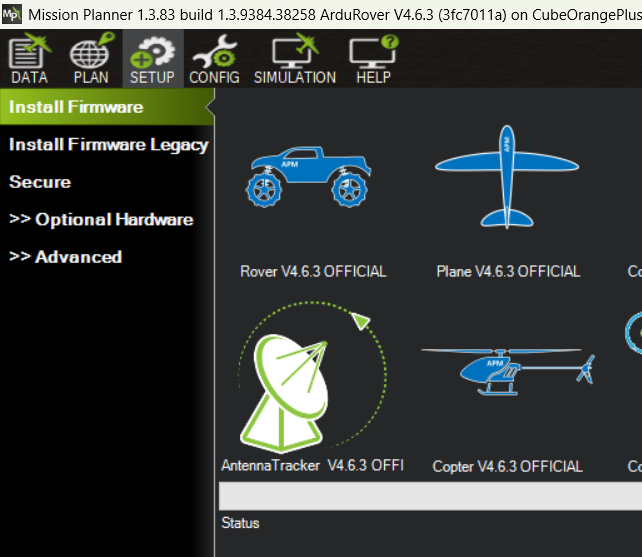
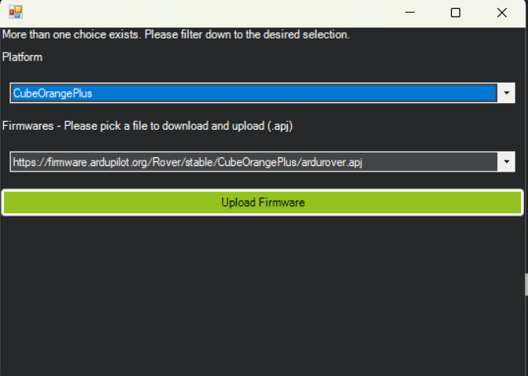
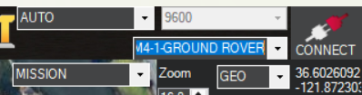
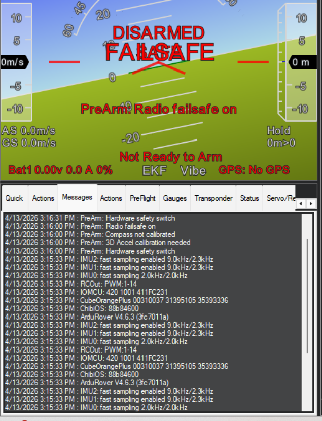
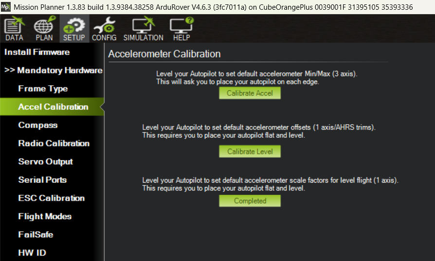
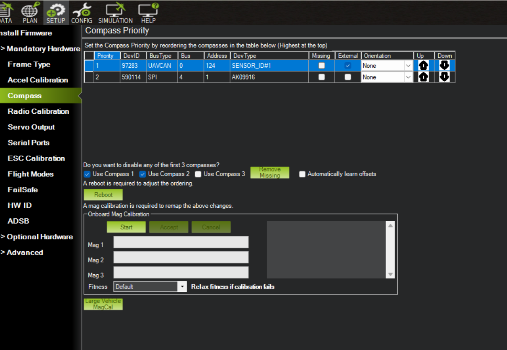
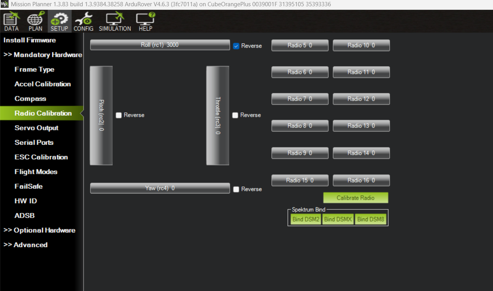
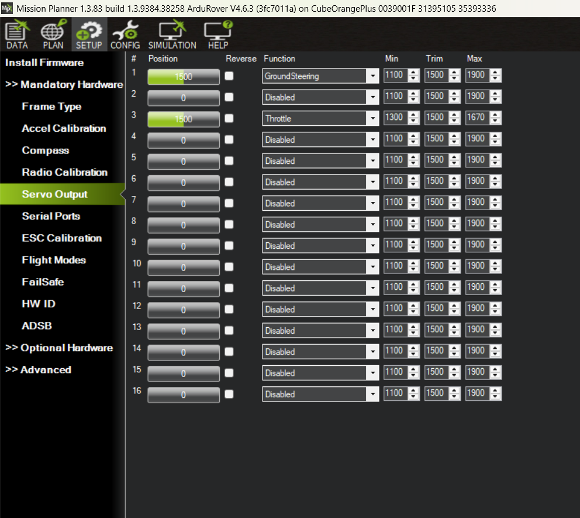
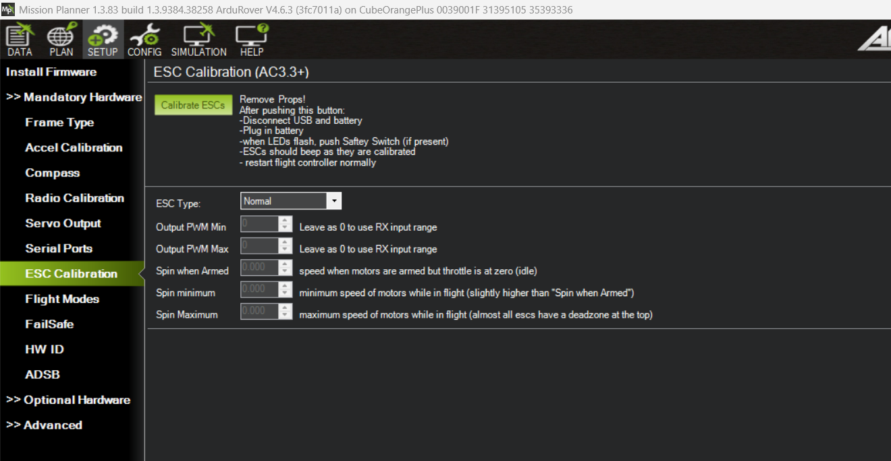
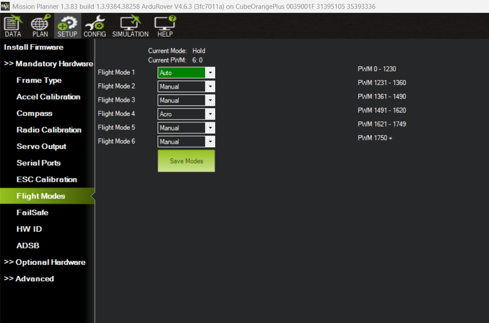

USV Provisioning
Notes on building a USV from the kit: wiring the autopilot and radios, then setting up the ground station and the autopilot through Mission Planner.
Wiring
The autopilot is a CubePilot Cube Orange+.
- Copy the wiring of the example USV, and/or follow the Cube wiring quick start.
- Telemetry radio: RFD900x setup.
Mission Planner Setup
These steps generally follow the ArduPilot Mission Planner setup guide.
Install Mission Planner
- Install version 1.3.83 locally from the ZIP archive (not the MSI), following these instructions: YouTube.
- Open Mission Planner (MP) and check that the title bar shows version 1.3.83.
Install the Autopilot Firmware
- Open MP without connecting to the autopilot.
- In the SETUP tab, choose Install Firmware.
Select Rover V4.6.3 OFFICIAL.

Select the firmware options as follows:

MP prompts you to start the firmware flash, then to connect the autopilot via USB.
- Check that the correct firmware is installed:
With the USB connection, use the AUTO port selection and click CONNECT.

After connecting, go to PLAN → Messages and look for the startup message “ArduRover V4.6.3 (3fc7011a)”.

Configure the R/C Transmitter
- On the transmitter (hold the wheel button while powering on): Create New Model → Channel Mapping → Channel Assign:
- THRO: Elevator
- AILE: Rudder
- Bind the receiver to the transmitter. MP can put the receiver in bind mode (see Radio Calibration below).
Set Up the Firmware
Once connected with the updated firmware, go to SETUP → Mandatory Hardware in MP.
Accel Calibration: choose the last option, simple calibration.

Compass: select “Large Vehicle MagCal”.

Radio Calibration. This is also where the Bind buttons are for re-binding the R/C receiver.

Servo Output: verify that it matches the following.

ESC Calibration.

Flight Modes.

Load the ArduRover Parameters
Every USV reuses the parameters from the example USV.
- Download the baseline parameter file:
2026_05_06_baseline_3.2.param. - In MP, go to CONFIG → Full Parameter List → Load from File and select the file you just downloaded.